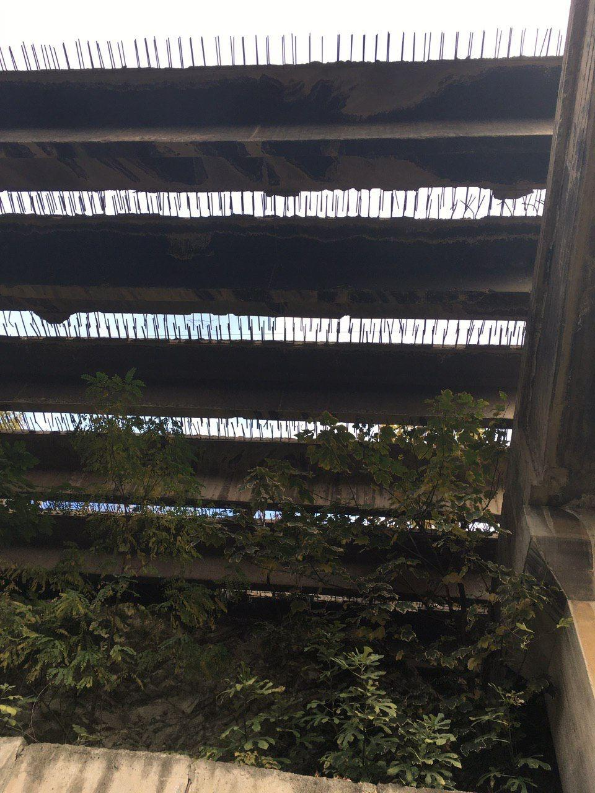
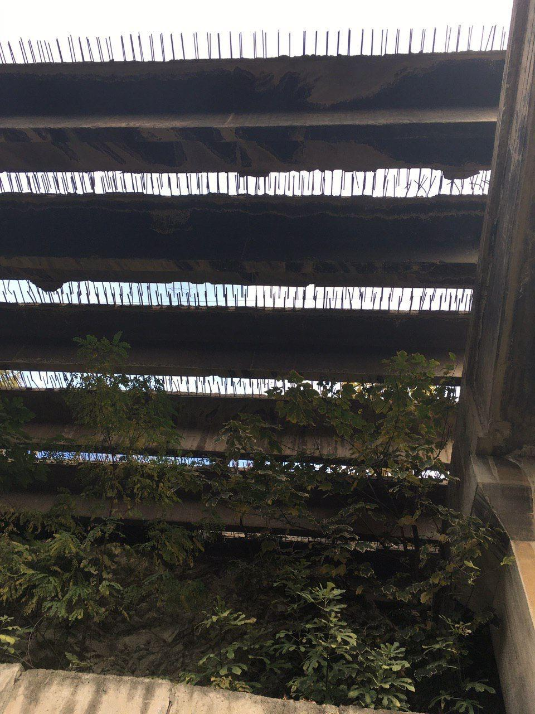
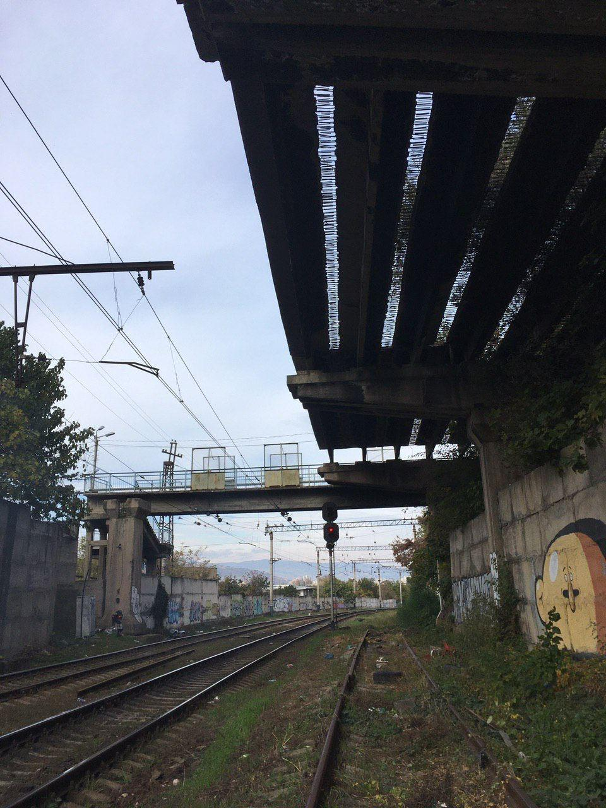
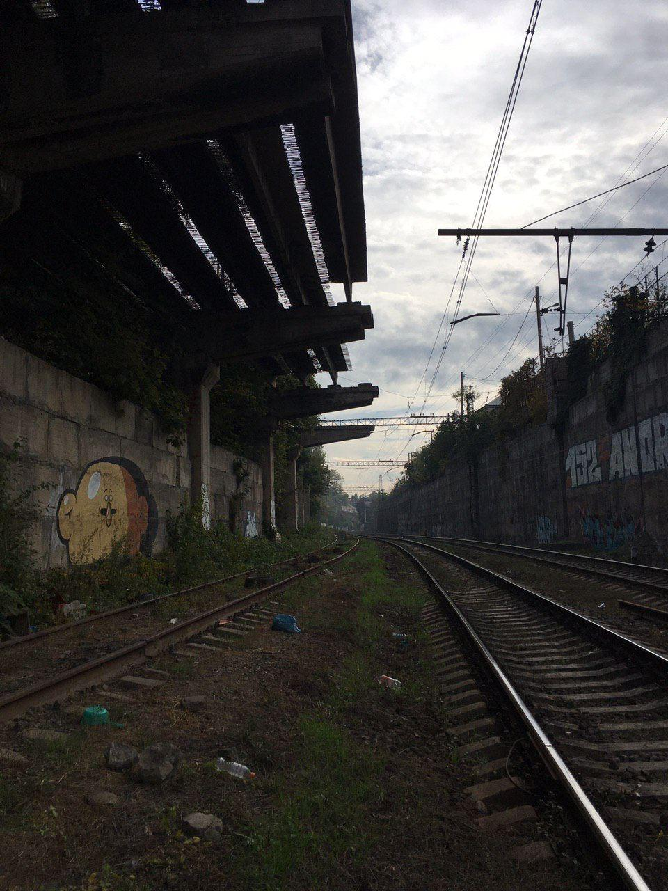
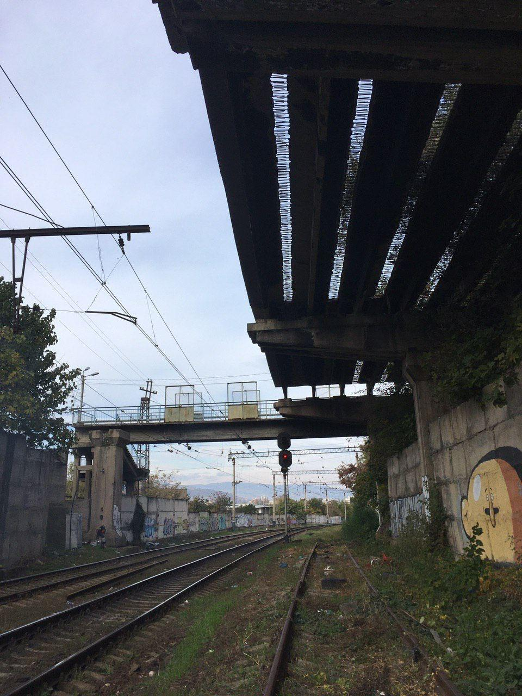
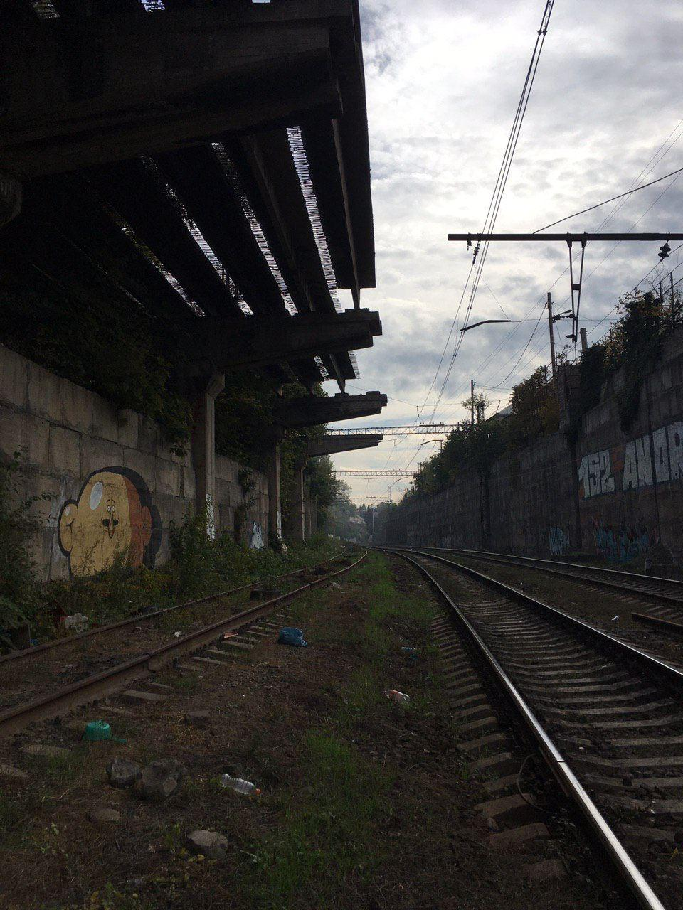

An abandoned construction on the railway found was used as a giant instrument. Iron sticks with different tones creating sequences of sounds. In Tbilisi 2021 there was a curfew starting at 9 pm, so nobody was allowed to go outside. Somehow we were passing little tangled roads in Svaneti Subani area to sneak to the place and play. Me and my friend BSW were inspired by gamelan music. One snippet from our sessions here, no edit, no master for now. Dogs are the best!

 

 


